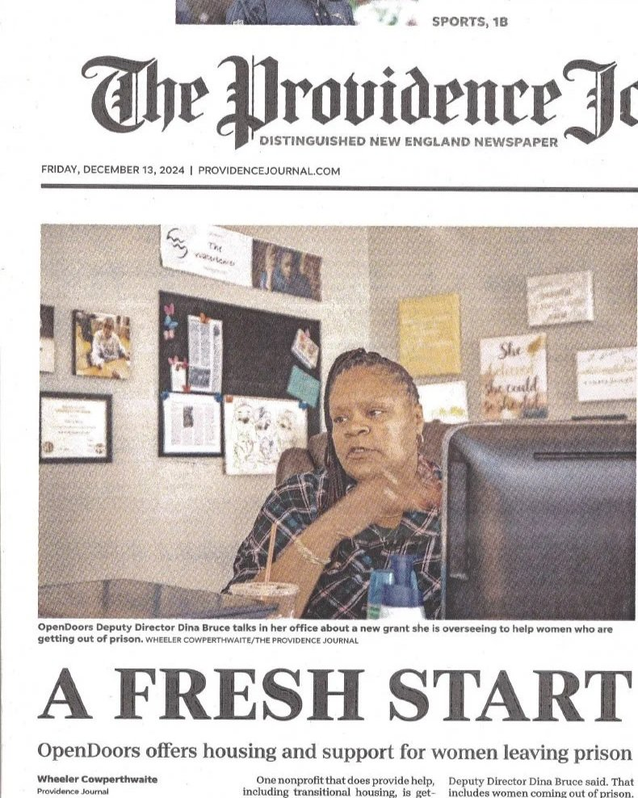
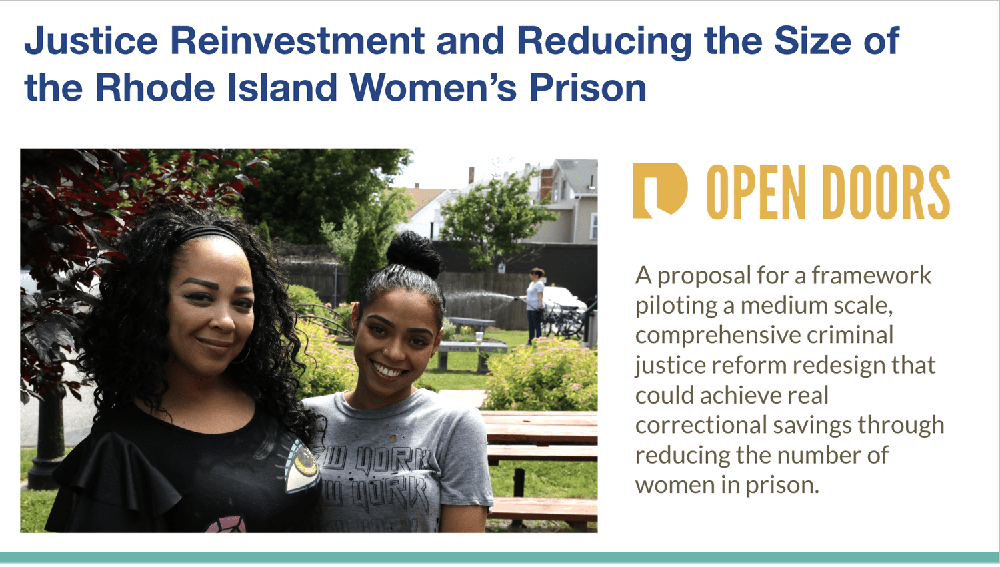

Reducing the Incarceration of Women
Watch the Archived Conversation:
“Can We Close the RI Women’s Prison”
Held on Wednesday, March 3, 2021 12:00-1:00pm
Join keynote speaker Andrea James, executive director of the National Council of Incarcerated and Formerly Incarcerated Women and Girls, RI Senator Meghan Kallman, retired warden Roberta Richman and OpenDoors Program Coordinator Koren Carbuccia presenting differing views on the question and discussing possible solutions to mass incarceration, the cost of female imprisonment, problems faced by women in prison and other related issues.
Women have become the fastest growing segment of the community to become incarcerated, according to the Prison Policy Initiative. To look at this and other issues, OpenDoors worked with Senator Meghan Kallman to create the Special Senate Commission on Justice Reinvestment and Reducing the Incarceration of Women. OpenDoors has helped show that this goal is possible through our She Thrives program and by opening up the state’s first transitional house specifically for women coming out of prison.
OpenDoors produced the report Women’s Incarceration in Rhode Island: Trends, Findings & Policy Implications: 2021–2025 on changes in the rates of incarceration of women from 2021 to 2025 in Rhode Island.

Keynote speaker Andrea James, a lawyer, served a 24 month prison sentence in 2009. While inside she saw the many injustices faced by women including denial of parental rights, failed health care, unjust disciplinary actions and other troubling trends and barriers. Along with others, she organized what is now a national organization to address these injustices and a call to free women and girls from a prison system that disproportionately incarcerates women of color.
Following the keynote address, there was a panel discussion and participants had the opportunity to ask questions and join in on the conversation, discussing the potential to reinvest some of the approximately seventeen million dollar per year budget of the women's correctional facilities in Rhode Island as well as the Special Senate Commission on Justice Reinvestment and Reducing the Incarceration of Women.